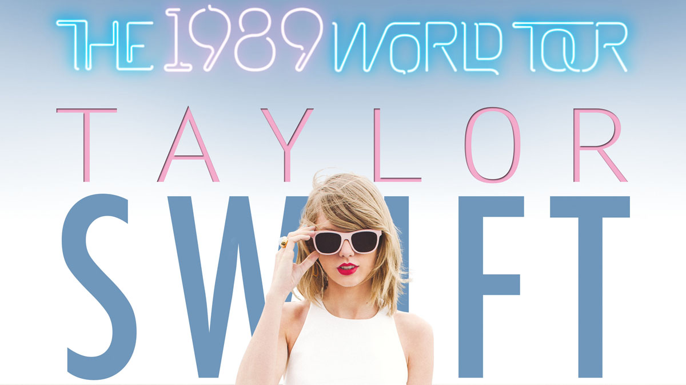
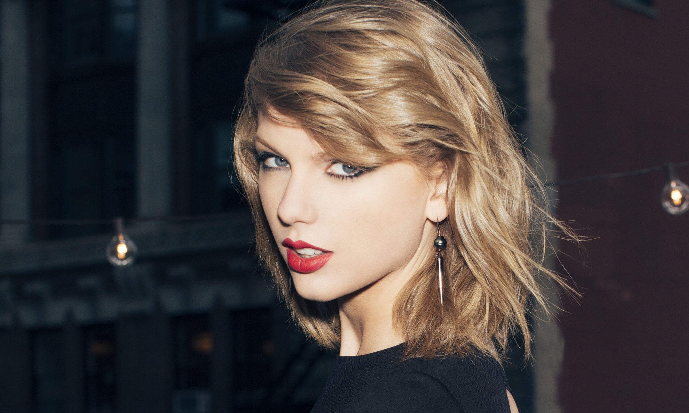
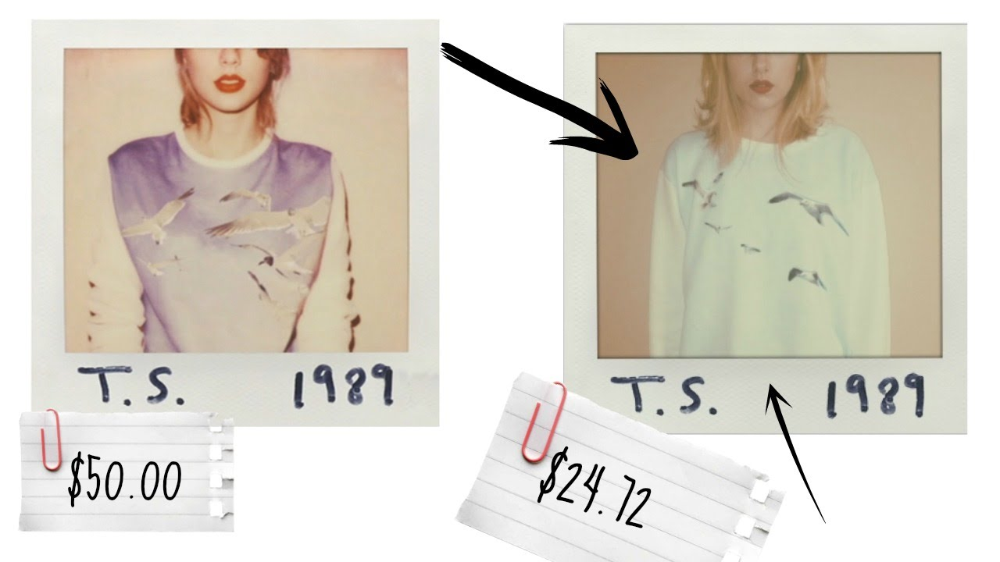
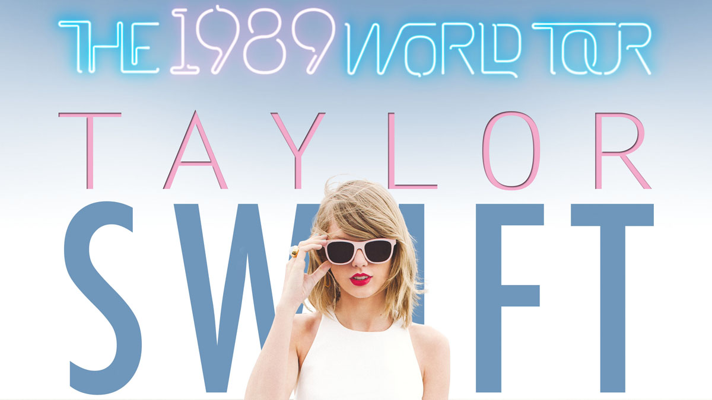
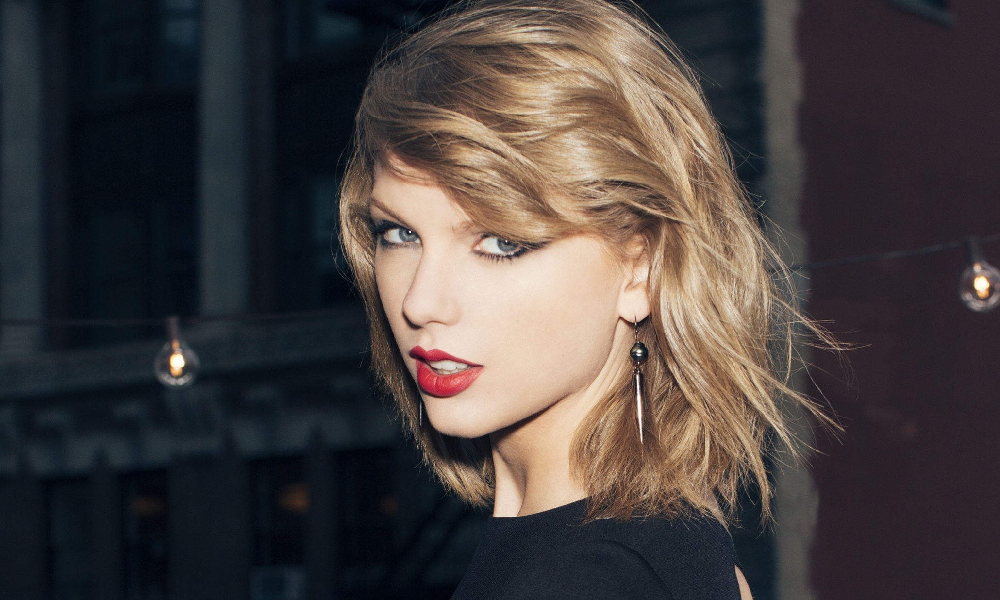
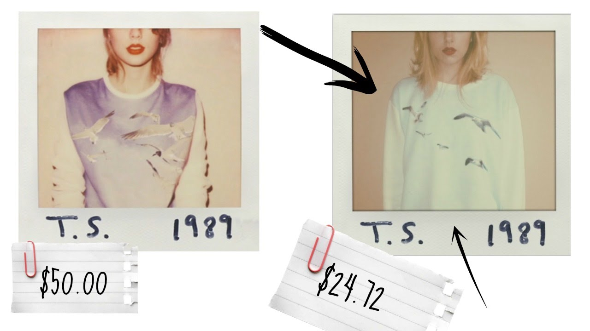

Taylor Alison Swift (born December 13, 1989) is an American singer-songwriter and actress. Raised in Wyomissing, Pennsylvania, she moved to Nashville, Tennessee, at the age of 14 to pursue a career in country music. She signed with the independent label Big Machine Records and became the youngest songwriter ever hired by the Sony/ATV Music publishing house. The release of Swift's self-titled debut album in 2006 established her as a country music star. Her third single, "Our Song," made her the youngest person to single-handedly write and perform a number-one song on the Hot Country Songs chart. She received a Best New Artist nomination at the 2008 Grammy Awards.
Swift's second album, Fearless, was released in 2008. Buoyed by the pop crossover success of the singles "Love Story" and "You Belong with Me," Fearless became the best-selling album of 2009 in the United States. The album won four Grammy Awards, making Swift the youngest ever Album of the Year winner. Swift's third and fourth albums, 2010's Speak Now and 2012's Red, both sold more than one million copies within the first week of their U.S release. Speak Now's "Mean" won two Grammy Awards, while Red's singles "We Are Never Ever Getting Back Together " and "I Knew You Were Trouble" were worldwide hits. Swift's fifth album, the pop-focused 1989, was released in 2014 and sold more copies in its opening week than any album in the previous 12 years, making Swift the first and only act to have three albums sell more than one million copies in the opening release week. The singles "Shake It Off", "Blank Space", and "Bad Blood" reached number one on the Billboard Hot 100.
Swift is known for narrative songs about her personal experiences. As a songwriter, she has been honored by the Nashville Songwriters Association and the Songwriters Hall of Fame. Swift's other achievements include seven Grammy Awards, 22 Billboard Music Awards, 11 Country Music Association Awards, eight Academy of Country Music Awards, and one Brit Award. She is one of the best-selling artists of all time, having sold more than 40 million albums—including 27.1 million in the U.S.—and 130 million single downloads. Swift has also had supporting roles in feature films including Valentine's Day (2010) and The Giver (2014). In 2015, Swift became the youngest woman ever to be included on Forbes' "100 Most Powerful Women" list, ranking at number 65.